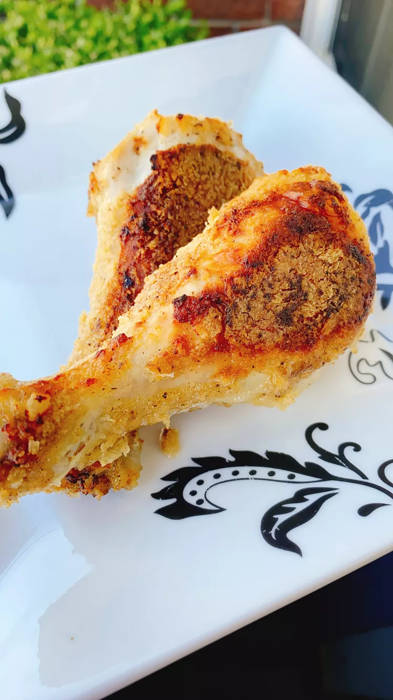

Easy Oven-Fried Chicken Legs

When you want fried chicken legs without all the grease!
Ingredients:
Buttermilk Marinade:
- 1 1/2 cups buttermilk
- 1 teaspoon salt
- 1/2 teaspoon of black pepper
- 6 chicken legs
Coating:
- 3/4 cup cornstarch
- 3/4 cup panko bread crumbs
- 1 teaspoon smoked paprika
- 1 teaspoon Greek seasoning
- 1 teaspoon onion powder
- 1/2 teaspoon of poultry seasoning
- 1/2 teaspoon salts
- 1/4 teaspoon ground black pepper
- 1/3 cup butter, melted, divided
Steps:
-
Combine the ingredients of the Buttermilk Marinade into a bowl.
Add the chicken legs and marinate at room temp for 30mins.
-
Preheat oven to 450F (230C).
Line a rimmed baking pan with foil and place in the oven.
-
Combine the Coating into a large ziplock bag.
-
Remove the chicken legs from the buttermilk, drain, and dip
the legs one at a time into the dry coating mixture.
-
Remove pan from the oven with pot holders and add 1 tablespoon melted butter to the pan.
With a pastry brush, spread melted butter all over the pan.
- Lay coated chicken legs into the pan.
Pour half of the melted butter over the chicken legs.
- Roast in the preheated oven until chicken is no longer pink at the bone and the juices
run clear, about 40 mins, turning over at the halfway point.
An instant-read thermometer inserted near the bone should read 165F (74C).
Drizzle with remaining melted butter and serve immeadiately.
Home